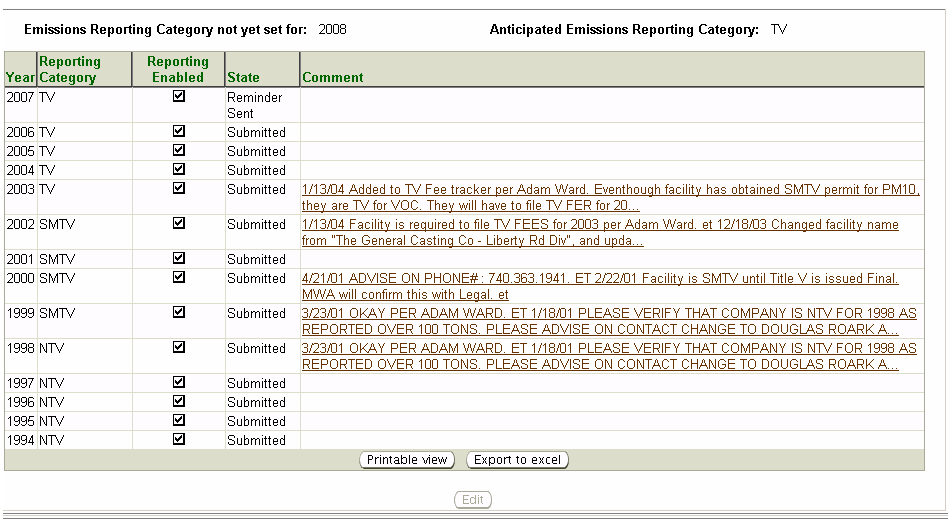

The system’s Reporting
Category page, available from the third-level menu of the Facilities
tab, allows you to view a
summary datagrid of the yearly emissions reporting category for the
facility
through time.To
view submitted
emissions inventories use the third-level menu Emissions
Inventory(s) and first-level menu Emissions
Inventories, and their Help pages.
Above the data grid
list you will see the following information:
Emissions
Reporting Category not yet set
for – Will
identify
the year in which Ohio EPA has not enabled, and identified, your
reporting
ability and category.Until
Ohio EPA has
set the Reporting
Category for any
year identified in this section, the facility will not be able
to submit an emissions inventory.If
you need emissions reporting enabled for a year(s) please contact the
Emissions
Reporting section at Ohio EPA Central Office.
Anticipated
Emissions Reporting Category
– Will identify the reporting category Ohio EPA believes will be
applicable to the facility for present or future emissions inventories.
The following datagrid of information
will appear when you
access the third-level menu, Reporting
Category:

Year
– The year for which reporting was required.
Reporting
Category – The category of emissions inventory applicable for
that Year;
SMTV,
TV or NTV.
Reporting
Enabled – A checkbox that when checked indicates the
facility will have
the ability to create and submit a report for that Year.If not
checked, the facility will not be able to create a report.
State
– Indicates the status of the emissions inventory for that Year, for
example Submitted.
Comments
– Certain users of the system will have rights to edit this page and
enter Comments relevant
to the emissions
report.You may
view the full comment
entered by these persons by clicking on the hyperlinked comment.
Information from the Reporting Category
list may be viewed, exported to Excel or printed. By
clickingyou
may view and print. By clickinga
pop-up will appear in which you must click Open
in order to view the information in Excel.
 you
may view and print. By clicking
you
may view and print. By clicking a
pop-up will appear in which you must click Open
in order to view the information in Excel.
a
pop-up will appear in which you must click Open
in order to view the information in Excel.